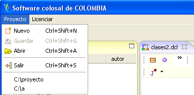
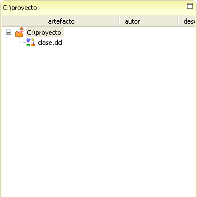
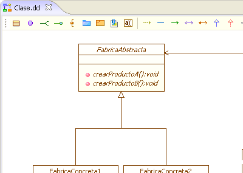
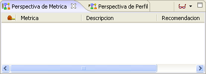
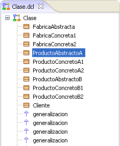
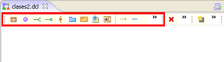
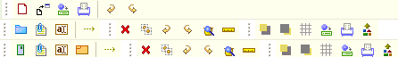
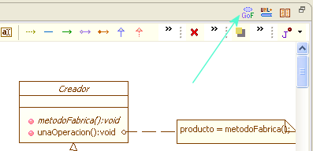

Framework AIA
AIA es el acrónimo de Ambiente Ingenieril Artístico, como tal, es una plataforma de desarrollo de software creada bajo la metáfora de una galería de arte. La Figura 1 muestra la manera general en la que se organiza el Framework AIA.
El Framework ha sido desarrollado en Java sobre SWT, con miras a expandirse de la misma forma que sucede con plataformas como Eclipse o NetBeans, sin embargo, se destaca en él su planteamiento metafórico haciendo relevancia hacia la integración y sinergia de la ingeniería de software y el arte.
AIA posee una distribución espacial particular, los paneles contienen información de la más general hacia la mas específica y detallada, siguiendo el orden izquierda a derecha. Es así como el marco en la izquierda contiene todo un proyecto, mientraz que a la derecha se detallan los elementos particulares de un diagrama o entorno. La Figura 1 muestra la forma en que Coloso organiza el nivel de detalle de los diálogos.

Figura 2. Metáfora de detalle del espacio de trabajo AIA
PARTES QUE INTEGRAN AIA: el framework compone todos los elementos de interface de Coloso para marcos, barras de marco y barra de general.
Menú Principal: Es una versión minimalista de los menus en otras herramientas similares, posee dos funcionalidades básicas que son el manejo de proyectos (Proyecto) y la del licenciamiento de la herramienta (Licenciar). VER MÁS

Figura 3. Menú Principal de AIA
Marco de Exposición: en este se presenta de manera jerárquica los artefactos creados en un proyecto de software, sus autores y la descripción de los mismos. VER MÁS

Figura 4. Marco de Exposición de AIA
Marco de Expresión: posibilita pintar (Diseñar) y escribir (Codificar) emulando la pintura y la literatura. Este marco brinda un área de modelado artístico, en cuya arquitectura es posible montar componentes dirigidos hacia el diseño de software. También brinda el marco de desarrollo ingenieril en cuya arquitectura es posible montar componentes como IDEs. VER MÁS

Figura 5. Marco de Expresión de AIA
Marco de Extensión: este marco posibilita ampliar la semántica de los marcos anteriores, ofrece a su vez un marco de perspectivas y uno de presentación.
En el marco de perspectivas es posible montar extensiones como: consolas, métricas, perfiles entre otras. VER MÁS

Figura 6. Marco de Extensión de AIA
En el marco de presentación es posible despegar de manera jerárquica información de los marcos de expresión, vistas en miniatura entre otras.

Figura 7. Vista miniatura del marco de Presentación
Barra
Específica del Marco: Se encuentra asociada al marco al cual
pertenece,
esta situada en la parte superior de cada marco, principalmente en los
plugins que utilizan el Marco de Expresión. En esta barra se encuentran
las funcionalidades que este marco puede ofrecer, que por ejemplo, para
el caso de los diagramas constaría de los elementos del diagrama y las
relaciones entre éstos.

Figura 8. Barra Específica del Marco
La Barra Específica del marco es particular para cada plugin, aunque algunos elementos comunes se conservan como es el caso de las funciones para guardar, imprimir, deshacer y rehacer. En la imagen se observan las barras específicas de los plugin IPE, Diagrama de Sistemas y Diagrama de Artefactos.

Figura 9. Diferentes juegos de iconos sobre la Barra Específica del Marco
Para el caso de los plugin basados en el Framework FG, la barra especifica tendra elementos comunes adicionales como los de eliminar, copiar, revizar la papelera, la regla y las herramientas de visibilidad.
Barra General del Marco: Está ubicada en la parte superior del mismo, por encima de la Barra Específica. A través de este se puede acceder a la ayuda y a funcionalidades adicionales que componentes instalados puedan brindar.
La Figura 10 muestra la Barra General del Diagrama de Clases. Particular a éste plugin el componente de patrones es agregado, de igual manera a medida que algunos componentes sean instalados, estos se ubicarán.

Figura 10. Barra General del Marco